측량및지형공간정보기사 (2005-03-06 기출문제)
1과목: 측지학 및 위성측위시스템
1. 중력은 관측점 사이의 고도차가 중력에 영향을 미칠 경우 보정을 해야 한다. 이 때 관측점 사이에 존재하는 물질의 인력에 의한 영향을 고려하는 보정을 무엇이라 하는가?
- 자유고도(free-air) 보정
- 위도 보정
- 부게(Bouguer) 보정
- 계기 보정
(정답률: 92%)

2. 다음 중 지자기 측정과 관련된 설명으로 옳은 것은?
- 자화(磁化)된 물질은 외부 자기장과 자화의 방향 등에 따라 상자성체, 반자성체, 강자성체 등으로 구분된다.
- 강자성체는 자기장이 제거 되면 자화하지 않는 물질을 말한다.
- 반자성체는 외부자기장이 가해지면 전체적으로 외부 자기장과 같은 방향으로 미약하게 나타난다.
- 부게이상(bouguer anomaly)은 지구 자기의 변화에 의한 것이다.
(정답률: 90%)
3. 지자기에 대한 설명 중 틀린 것은?
- 지자기의 방향과 수평면과의 각을 복각이라 한다.
- 지자기의 3요소는 편각, 복각, 수직분력이다.
- 지자기는 그 방향과 크기를 구함으로써 정해진다.
- 지자기의 방향과 자오선과의 각을 편각이라 한다.
(정답률: 77%)
4. 다음 중 위성의 기하학적 배치 상태에 따른 정밀도 저하율을 뜻하는 것은?
- 멀티패스(Multipath)
- DOP
- 싸이클 슬립(Cycle Slip)
- S/A
(정답률: 90%)
5. 중력이상에 대한 설명 중 잘못된 것은?
- 중력이상이란 실제 관측 중력값에서 표준 중력식에 의해 계산한 중력값을 뺀 것이다.
- 지오이드의 요철, 지하구조의 결정 등에 이용된다.
- 일반적으로 실측 중력값과 계산식에 의한 이론 중력 값은 일치하지 않는다.
- 중력이상이 (+)이면 그 부근에 밀도가 작고 가벼운 물질이 존재한다.
(정답률: 77%)
6. 위성궤도 요소 중 우주공간을 기준으로 한 궤도면의 공간 위치를 나타내는 3가지 요소에 해당되지 않는 것은?
- 승교점 적경 (Ω)
- 궤도 경사각(i)
- 근지점의 독립변수(ω)
- 궤도주기(T)
(정답률: 알수없음)
7. 다음 중 물리학적 측지학에 속하지 않는 것은?
- 중력측정
- 지자기측정
- 지구의 형상해석
- 천문측량
(정답률: 59%)
8. 다음 중 해상의 수평위치 결정방식이 아닌 것은?
- Echo Sounder
- Raydist
- Omega
- Decca
(정답률: 91%)
9. 다음 중 구면삼각형 및 구과량에 대한 설명으로 옳지 않은 것은?
- 구면삼각형의 내각의 합은 180° 보다 크다.
- 평면측량에서는 구과량의 크기가 매우 작아 무시한다.
- 구면삼각형의 각변은 대원의 호장이다.
- 구과량은 구면삼각형의 면적에 반비례한다.
(정답률: 82%)
10. 다음 중 균시차를 바르게 표시한 것은?
- 항성시 - 평균 태양시
- 평균 태양시 - 항성시
- 시 태양시 - 평균 태양시
- 시 태양시 - 항성시
(정답률: 알수없음)
11. 다음 중 GPS 측량에 있어 기준점 선점시 고려사항과 가장 거리가 먼 것은?
- 전파의 다중경로 발생 예상지점 회피
- 주파단절 예상지점 회피
- 임계 고도각 유지가능 지역 선정
- 위성의 배치 상태가 항상 좋은 지점 선정
(정답률: 90%)
12. 다음 중 GPS측량의 응용분야로 가장 거리가 먼 것은?
- 측지측량분야
- 차량분야
- 군사분야
- 실내인테리어분야
(정답률: 91%)
13. 지구의 모양이 장반경 6,377㎞, 단반경 6,356㎞의 회전타원체라면 지구의 편평률은 대략 얼마인가?
- 1/103
- 1/304
- 1/529
- 1/754
(정답률: 67%)
14. 지구 조석에 대한 설명 중 맞는 것은?
- 달과 지구의 거리가 가까울 때는 조차가 크며, 거리가 멀 때는 조차가 작아진다.
- 어떤 지점의 조석은 1일 주기의 한 종류만 존재한다.
- 달이 적도부근에 있을 때의 일조부등이 작은 조석을 회귀조라 한다.
- 해면이 승강하더라도 해저에 걸리는 해수의 하중은 변화하지 않는다.
(정답률: 70%)
15. 다음에서 기하학적 측지학에 속하는 것은?
- 수평위치 결정
- 중력 측정
- 지자기 측정
- 탄성파 측정
(정답률: 22%)
16. GPS 위성에 대한 다음 내용 중 잘못 설명된 것은?
- 측지기준계로 WGS84를 채택하고 있다.
- 2004년 기준, GPS 위성은 적도면으로부터 위성궤도의 경사각이 30°인 4개의 궤도면에 배치되어 운용되고 있다.
- GPS 위성은 0.5항성일(약 11시간 58분)의 주기로 지구 주위를 돌고 있다.
- 시간 기준은 세슘(Cs) 또는 루비듐(Rb) 원자시계에 기본을 둔 GPS 시간 체계를 사용하고 있다.
(정답률: 82%)
17. 다음 천문좌표계 중 지구공전궤도면을 기준으로 하는 좌표는?
- 황도좌표
- 지평좌표
- 적도좌표
- 은하좌표
(정답률: 42%)
18. 다음 중 직교하는 세 개의 축 방향으로의 길이로 공간상의 한점의 좌표를 결정하는 좌표계는?
- 3차원 사교 좌표계
- 3차원 직교 좌표계
- 2차원 직교 좌표계
- 2차원 사교 좌표계
(정답률: 92%)
19. 지오이드(Geoid)에 대한 정의로 맞는 것은?
- 지오이드는 평균해면을 육지까지 연장하여 이루어지는 가상적인 곡면을 말한다.
- 지오이드의 법선은 일반적으로 지구 타원체의 법선과 일치한다.
- 지오이드는 불규칙한 지형과 지하물질의 밀도 분포를 무시한 가상의 면이다.
- 지오이드는 물리적 지표면 보다는 항상 위에 위치한다.
(정답률: 34%)
20. 성과표에서 삼각점 A에 대한 진북방향각(X 좌표축 기준)이 α = +0° 16' 42"일 때 시준점 B에 대한 방향각이 75° 32' 51" 라면 AB축선의 방위각은 얼마인가?
- 75° 16′ 09″
- 75° 49′ 33″
- 255° 16′ 09″
- 255° 49′ 33″
(정답률: 10%)
2과목: 응용측량
21. 하천의 유속측정에서 수면으로부터 0.2h, 0.6h, 0.8h 깊이의 유속이 각각 0.562, 0.497, 0.364 m/sec이었다. 이 때 평균유속이 0.463m/sec이었다면 다음 어느 방법으로 계산한 것인가? (단, h : 하천의 수심)
- 1점법
- 2점법
- 3점법
- 4점법
(정답률: 72%)
22. 도로의 중심선을 따라 20m 간격의 종단측량을 해서 표와 같은 결과를 얻었다. 측점 1과 측점 5의 지반고를 연결하는 도로계획선을 설정한다면 이 계획선의 구배는?
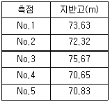
- -1%
- -3.5%
- +3.5%
- +1%
(정답률: 70%)
23. 완화곡선에 대한 다음 설명 중 잘못된 것은?
- 완화곡선에 연한 곡선반경의 감소율은 캔트의 증가율과 같다.
- 곡선반경은 완화곡선의 시점에서 무한대, 종점에서 원곡선의 반경이 된다.
- 종점에 있는 캔트는 직선의 캔트와 같게 된다.
- 완화곡선의 접선은 시점에서 직선에, 종점에서 원호에 접한다.
(정답률: 15%)
24. 교량의 경관 계획에서 고려할 사항으로 가장 거리가 먼것은?
- 교량가설위치, 형식, 규모를 결정한다.
- 교량을 조망하는 시점 및 시점장을 찾는다.
- 교량의 유지관리 체계를 평가한다.
- 교량과 지형, 주변시설물과의 조화 등을 평가한다.
(정답률: 73%)
25. 완화곡선을 설치하는 장소로 맞는 것은?
- 반향곡선과 원곡선 사이
- 배향곡선과 원곡선 사이
- 반향곡선과 직선사이
- 원곡선과 직선사이
(정답률: 80%)
26. 원곡선을 설치하는 데 있어서 교각 I = 90°, 접선장 T.L= 90m 일때 원곡선 반경 R은?
- 90m
- 100m
- 120m
- 156m
(정답률: 알수없음)
27. 삼각형의 두변과 그 협각을 측정해서 그림과 같은 측정값을 얻었다. 이 삼각형의 면적은?
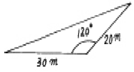
- 230m2
- 240m2
- 250m2
- 260m2
(정답률: 54%)
28. 그림과 같이 토지를 면적비 m:n=1:3으로
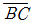
에 평행하게 분할하였다.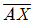
의 거리가 20m라면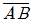
의 거리는?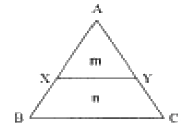
- 20m
- 30m
- 40m
- 50m
(정답률: 67%)
29. 교각이 80°인 두 직선 사이에 단곡선을 설치할 때 외선길이(external secant)를 25m로 한다면 곡선반경(R)은?
- 5.3m
- 44.9m
- 81.9m
- 106.9m
(정답률: 82%)
30. 갱내에서 차량 등에 의하여 파손되지 않도록 콘크리트 등을 이용하여 만든 중심말뚝을 무엇이라 하는가?
- 도갱(導坑)
- 레벨(level)
- 자이로(gyro)
- 도벨(dowel)
(정답률: 82%)
31. 하천수위에 대한 설명 중 갈수위는 어느 것인가?
- 1년 중 275일간은 이보다 내려가지 않는 수위
- 수년간 저수위 및 고수위를 평균한 수위
- 어느 기간 중 가장 많이 일어난 수위
- 1년을 통하여 355일간은 이보다 내려가지 않는 수위
(정답률: 70%)
32. 항공사진측량을 지적측량에 활용하는 이유로 가장 거리가 먼 것은?
- 정확도가 전체적으로 균일하다.
- 대단위지역에서 시간·경제적으로 우수하다.
- 공중에서 전체지역을 볼 수 있기 때문에 보완측량이 필요없다.
- 접근하기 어려운 대상지역에도 측량이 가능하다.
(정답률: 79%)
33. 갱의 시점(P)과 종점(Q)의 좌표가 P(1200, 800, 75), Q(1600, 600, 100)로 갱도를 굴진할 경우 경사각은?
- 2° 11′ 19″
- 2° 13′ 19″
- 3° 11′ 59″
- 3° 13′ 19″
(정답률: 70%)
34. 클로소이드 곡선의 계산에서 곡선 길이(L)= 40m, 매개변수(A)=100m일 경우 접선각은 얼마인가?
- 4° 35′ 01″
- 4° 45′ 01″
- 4° 55′ 01″
- 5° 35′ 01″
(정답률: 알수없음)
35. 다음 중 하천측량의 일반적인 작업 순서로서 옳은 것은?
- 자료조사→현지조사→평면측량→수준측량→유량측량
- 자료조사→수준측량→평면측량→현지조사→유량측량
- 현지조사→유량측량→자료조사→평면측량→수준측량
- 현지조사→자료조사→유량측량→수준측량→평면측량
(정답률: 85%)
36. 정사각형의 면적을 관측하기 위하여 거리 관측을 실시한 결과의 정확도가 K라고 할 때, 면적 측량의 정확도는 얼마인가? (단, K는 전체거리 분의 오차거리를 나타낸 것이다. 예를 들어 정확도 K=1/1000 은 1000m 거리에서 ±1m 오차가 있을 수 있다는 뜻이다.)
- K2
- 2K
- K/2
- 2/K
(정답률: 71%)
37. 터널측량을 크게 3부분으로 나눌 때 그 분류로 옳지 않은 것은?
- 지상측량(갱외측량)
- 지하측량(갱내측량)
- 지상ㆍ지하 연결측량
- 평면측량
(정답률: 80%)
38. 경관측량에서 인식대상의 주체에 대하여 경관을 자연경관, 인공경관, 생태경관으로 분류할 때 자연경관에 해당 되지 않는 것은?
- 산
- 정원
- 하천
- 바다
(정답률: 91%)
39. 축척 1/600 도상에서 세변의 길이가 각각 24.8cm, 47.5cm, 23.5cm 일 때 실제 면적은?
- 103.92m2
- 3741.12m2
- 4741.12m2
- 5741.12m2
(정답률: 알수없음)
40. 노선측량에서 다음과 같은 단곡선이고 곡률반경(R)이 80m일 때 PQ의 거리는? (단, AB의 방위 = N 22° 25′ 00″ E, BC의 방위 = S 25° 22′ 00″ E)
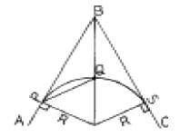
- 87.27m
- 73.15m
- 64.80m
- 53.75m
(정답률: 29%)
3과목: 사진측량 및 원격탐사
41. 기계적 절대표정(absolute orientation)에 필요한 최소한의 기준점 수로 옳은 것은?
- 3점의 (x, y)좌표 및 1점의 (z)좌표
- 2점의 (x, y)좌표 및 2점의 (z)좌표
- 2점의 (x, y, z)좌표 및 1점의 (z)좌표
- 3점의 (x, y, z)좌표 및 1점의 (z)좌표
(정답률: 50%)
42. 다음 중 탑재된 센서로 경사관측이 불가능한 위성은?
- SPOT 위성
- 아리랑 위성
- IRS 위성
- Landsat 위성
(정답률: 91%)
43. 사진의 가로 a=23cm, 세로 b=23cm, 촬영고도 H=5,480m 초점거리 f=25cm 일 때 이 화면의 포괄면적은?
- 18.2km2
- 20.8km2
- 22.4km2
- 25.4km2
(정답률: 25%)
44. 사진측량에서 등고선의 정확도에 대한 설명 중 옳지 않은 것은?
- 등고선의 정확도는 수평위치와 수직위치를 각각 정한다
- 지표면의 경사가 급할수록 수평위치오차는 커지고, 완만할수록 작아진다.
- 수목이나 가옥의 영향에 따라 오차가 커진다.
- 지표면의 경사가 완만할수록 수직위치의 정확도가 높다
(정답률: 17%)
45. 편위수정기로 항공 사진을 해석적인 방법에 의하여 편위수 정할 때 최소한 몇 점의 기준점이 필요한가?
- 1
- 4
- 6
- 9
(정답률: 65%)
46. GIS의 특징에 대한 설명으로 가장 옳지 않은 것은?
- 지리정보처리는 자료의 입력, 자료의 분석, 자료의 출력의 3단계로 구분할 수 있다.
- 사용자의 요구에 맞는 지도를 쉽게 제작할 수 있다.
- 자료의 통계적 분석이 가능하며 분석결과에 맞는 지도의 제작이 가능하다.
- 일반적으로 자료가 수치적으로 구성됨으로 축척 변경이 어렵다.
(정답률: 80%)
47. 항공사진의 축척에 대한 설명중 가장 타당한 것은?
- 카메라의 초점거리가 길수록 축척은 작아진다.
- 비행고도가 높을수록 축척은 커진다.
- 비행고도가 낮을수록 축척은 커진다.
- 카메라의 초점거리가 짧을수록 축척은 커진다.
(정답률: 46%)
48. 항공사진의 특수 3점이 아닌 것은?
- 주점
- 등각점
- 표정점
- 연직점
(정답률: 80%)
49. 축척 1/20,000로 촬영된 연직사진을 C-계수가 1,300인 도화기로 도화할 수 있는 최소등고선 간격이 1.5m이었을 때 기선고도비는? (단, 사진면의 크기는 23cm×23cm, 횡중복도는 30%, 종중복도는 60%임)
- 0.64
- 0.84
- 0.94
- 1.04
(정답률: 59%)
50. GIS에서 커버리지 또는 레이어(coverage or layer)에 대한 설명으로 옳지 않은 것은?
- 단일주제와 관련된 데이타 셋트를 의미한다.
- 균등한 특성을 갖는 래스터정보의 기본요소를 의미한다
- 공간자료와 속성자료를 갖고 있는 수치지도를 의미한다
- 하나의 인공위성 영상에 포함되는 지상의 면적을 의미하기도 한다.
(정답률: 25%)
51. 벡터구조에 비해 격자구조(grid 또는 raster)가 갖는 장점이 아닌 것은?
- 중첩에 대한 조작이 용이하다.
- 자료구조가 간단하다.
- 자료조작과정이 용이하며, 영상의 질을 향상시킬 수 있다.
- 지형의 세세한 표현에 효과적이다.
(정답률: 69%)
52. 두 격자자료의 입력값이 각각 0과 1일 때, 각 논리연산자 AND, OR, NOT, XOR에 의한 결과는? (단, AND, OR, NOT, XOR의 순서이고 참일 때 1이고 거짓일 때 0 이다.)
- 0-0-0-1
- 1-1-0-0
- 1-0-0-1
- 0-1-0-1
(정답률: 72%)
53. 평지에서 일정 높이를 갖는 경우 중심투영의 성질 때문에 사진에서는 연직점을 중심으로 방사상의 변위가 발생하는 것을 무엇이라 하는가?
- 회전변환
- 시차
- 기복변위
- 주점간의 거리
(정답률: 64%)
54. 과고감에 대한 다음 설명 중 틀린 것은?
- 입체시할 때 평면축척보다 수직축척이 크게 나타나는 현상이다.
- 입체시할 때 눈의 위치가 약간 높아지면 과고감이 더 커진다.
- 과고감은 기선고도비에 비례한다.
- 과고감은 동일 촬영조건시 종중복도에 비례한다.
(정답률: 62%)
55. 수치표고모형(DEM)으로부터 얻을 수 있는 자료들로만 짝지어진 것은?
- 사면방향도, 경사도에 대한 분석도
- 수계도, 토지피복도
- 가시권에 대한 분석도, 도로망도
- 표고분석도, 역세권 분석도
(정답률: 82%)
56. 다음 중 영상자료의 저장형식이 아닌 것은?
- BIL(Band Interleaved by Line)
- BSQ(Band SeQuential)
- BSI(British Standards Institute)
- BIP(Band Interleaved by Pixel)
(정답률: 82%)
57. 초점거리 150㎜의 카메라로 해발고도 2950m에서 평균해발 50m의 평지를 촬영하였을 때 사진축척은?
- 1/19,333
- 1/20,333
- 1/17,333
- 1/18,333
(정답률: 59%)
58. GIS자료의 입력에 적용하는 수동 디지타이징방법에 대한 설명으로 가장 옳은 것은?
- 스캐닝방법과 비교하여 작업속도가 빠르다.
- 스캐닝방법과 비교하여 작업이 자동화 되었다.
- 입력할 양이 적은 지도에 적합하며 정확도가 높다.
- 복잡하고 다양한 폴리곤이 많은 지도에서 경제적이다.
(정답률: 59%)
59. 촬영대상 면적이 1500km2인 직사각형 구역에서 항공사진 한 장의 입체모델에 찍힌 면적이 16.08km2이라면 안전율 20%를 고려할 때 이 지역에 필요한 사진 매수는?
- 92매
- 103매
- 112매
- 123매
(정답률: 92%)
60. 원격탐사(remote sensing)에 관한 설명 중 옳지 않은 것은?
- 센서에 의한 지구표면의 정보취득이 용이하며, 관측자료가 수치기록 되어 판독이 자동적이고 정량화가 가능하다.
- 정보수집장치인 센서로는 MSS(multispectral scanner), RBV(return beam vidicon) 등이 있다.
- 원격탐사는 원거리에 있는 대상물과 현상에 관한 정보(전자스펙트럼)를 해석함으로써 토지, 환경 및 자원문제를 해결하는 학문이다.
- 원격탐사는 인공위성에서만 이루어지는 특수한 기법이다.
(정답률: 84%)
4과목: 지리정보시스템
61. 원 지형도(地形圖)를 확대하여 새로운 지형도를 제작할 때 다음 중 새로 확대된 지형도의 정밀도(精密度)가 좋은 순서대로 나열된 것은?
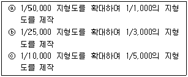
- ⓒ, ⓑ, ⓐ
- ⓐ, ⓑ, ⓒ
- ⓐ, ⓒ, ⓑ
- ⓑ, ⓐ, ⓒ
(정답률: 80%)
62. 수준측량에서 전시거리와 후시거리를 같게 잡는 이유로서 가장 적당한 것은?
- 측정작업이 간단하다.
- 계산이 용이하다.
- 기계오차와 대기굴절 오차가 소거된다.
- 과대오차를 줄일수 있다.
(정답률: 91%)
63. 그림과 같은 직사각형 지역에 지반고 13m인 평탄한 택지를 조성하기 위하여 필요한 토공량은? (단, 지반고의 단위는 m임)
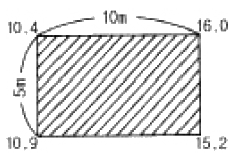
- 절토, 6.25m3
- 성토, 6.25m3
- 절토, 12.5m3
- 성토, 12.5m3
(정답률: 80%)
64. 수치지도제작에 관한 설명 중 잘못된 것은?
- 수치지도의 자료취득 방법으로는 작성된 지형도나 항공사진을 이용한다.
- 입력체계로는 해석도화기, 스캐너, 디지타이저를 이용한다.
- 편집체계에서 도형의 가공, 편집, 수정을 마치면 수치화된 지도정보를 도화기 등을 통하여 출력한다.
- 입력시 부호화에 사진은 Vector방식, 지도는 Raster 방식으로 처리된다.
(정답률: 79%)
65. 기지점 A, B 사이를 결합 트래버스 측량한 결과, X좌표의 폐합차 = -0.15m, Y좌표의 폐합차 = +0.20m, 노선길이 = 2750.00m를 얻었다. 이 트래버스 망의 정밀도는?
- 1/7,857
- 1/11,000
- 1/18,333
- 1/19,000
(정답률: 64%)
66. 지리정보시스템에서 자료의 오차의 발생원인에 대한 설명중 틀린 것은?
- 원자료의 오차는 자료기반에 포함되지 않는다.
- 지역을 지도화하는 과정에서 선으로 표현할 때 오차가 발생한다.
- 여러가지의 자료층을 처리하는 과정에서 오차가 발생한다.
- 자료입력을 수동으로 하는 것도 오차 유발의 원인이 된다.
(정답률: 73%)
67. 같은 경중류로 측량한 거리 측량결과 10회의 평균값이 100.45m 이었다. 이 때 잔차제곱의 합이 0.⑤79m이고 잔차의 합이 -0.10m이라고 하면 거리를 평균값 ±표준편차로 나타내면?
- 100.45m ±0.⑤m
- 100.45m ±0.08m
- 100.45m ±0.13m
- 100.45m ±0.15m
(정답률: 50%)
68. 다음 설명 중 옳지 않는 것은?
- 세부측량이란 골격(골조)측량에서 결정된 측선을 기준으로 지형이나 지물을 측정하는 것이다.
- 지거란 측정하려고 하는 어떤 한점에서 기선에 내린 수선의 길이이다.
- 계곡선은 지형을 표시하는 데 기준이 되는 등고선이므로 가는 실선으로 표시한다.
- 용지측량이란 토지 및 경계 등에 대하여 조사하고 용지 취득 등에 필요한 자료 및 도면을 작성하는 것이다.
(정답률: 75%)
69. 평판 측량의 장·단점에 대한 설명으로 옳지 않은 것은?
- 부속품이 많아서 분실하기 쉽다.
- 현장에서 측량이 잘못된 곳을 발견하기 쉽다.
- 레벨보다 고저 측량을 쉽고 정확하게 행할 수 있다.
- 기후의 영향을 많이 받는다.
(정답률: 77%)
70. 그림의 다각측량에서 C에서 D를 향한 측선의 방위각은?
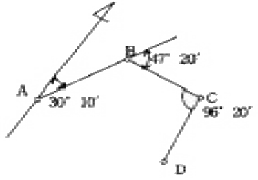
- 173° 50′
- 161° 10′
- 159° 40′
- 157° 30′
(정답률: 17%)
71. 3차 중첩 보간법(cubic convolution)을 최근린보간법(Nearest Neighbor Interpolation)과 비교할 때 그 설명으로 옳은 것은?
- 출력 영상소의 평균과 표준편차가 입력 영상소의 평균과 표준편차와 잘 맞는다.
- 자료값의 최대값과 최소값이 손실되지 않는다.
- 계산이 가장 쉽고 빠르다.
- 출력영상이 매끄럽지 못하다.
(정답률: 80%)
72. 어느 지점 P1의 직각좌표가 X1=-2,000m, Y1=1,000m 이고, 다른 지점 P2까지의 거리가 1,500m이며
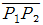
의 방향각이 60°이었다면 이 때 P2의 직각좌표는?- X2 = -1,250m, Y2 = 2,299m
- X2 = -701m, Y2 = 1,750m
- X2 = -2,299m, Y2 = 1,250m
- X2 = -1,750, Y2 = 701m
(정답률: 75%)
73. 기준타원체면상에서 한변의 길이가 20km인 정삼각형의 내각은 정확히 180°가 되지 않는다. 평면삼각형의 내각으로 환산하고자 할 때의 방법으로 가장 적당한 것은?
- 측정오차가 발생하였으므로 재측한다.
- 구과량을 구하여 각 내각에 1/3씩 빼준다.
- 구과량을 구하여 각 내각의 크기에 반비례하여 빼준다.
- 무시한다.
(정답률: 73%)
74. 직사각형의 토지를 종, 횡으로 측정하여 65.45m, 58.55m를 얻었다. 길이의 측정값을 각각 ±1cm의 표준오차로 유지할 때 면적의 표준오차는?
- ±0.77m2
- ±0.88m2
- ±1.50m2
- ±1.76m2
(정답률: 70%)
75. 다각측량을 통한 결과에 대한 설명으로 옳지 않은 것은?
- 방위각 330°, 거리 100m에 대한 경거의 값은 -50m이다
- 위거, 경거의 오차가 각각 3cm, 4cm일 때 폐합오차는 5cm이다.
- 측선 총거리가 100m, 폐합오차 0.⑤m일 때 정확도는 1/3,000이다.
- 각 측정의 정확도가 같을 때에는 오차를 각의 크기에 관계 없이 동일하게 배분한다.
(정답률: 70%)
76. 다음 설명 중 옳지 않은 것은?
- 지성선은 토지기복이 되는 선으로 주로 산악에 있어서 요선, 철선, 경사변환점 등을 나타내는 선이다.
- 경사변환선이란 지성선이 방향을 바꾸어 다른 방향으로 향하는 점 또는 분기하거나 합하여 지는 점이다.
- 능선이란 지표면이 높은 곳의 꼭대기 점을 연결한 선이다.
- 계곡선은 지표면이 낮거나 움푹 패인 점을 연결한 선으로 합수선이라고도 한다.
(정답률: 28%)
77. 축척 1/5,000도상에서의 면적이 40.52㎝2이었다. 실제 면적은?
- 0.01㎞2
- 0.1㎞2
- 1.0㎞2
- 10.0㎞2
(정답률: 84%)
78. 다음 설명 중에서 옳지 않은 것은?
- 삼각수준측량의 관측값 중에서 굴절오차는 낮게, 곡률 오차는 높게 조정한다.
- 방위각은 진북방향과 측선이 이루는 우회각이며, 방향각은 기준선과 측선이 이루는 우회각을 말한다.
- 배각법은 방향각법과 비교하여 읽기 오차의 영향을 많이 받는다.
- 다각측량에 의하여 기준점의 위치를 결정하는데 가장 정확한 방법은 결합트래버스 방법이다.
(정답률: 10%)
79. 미지점에 평판을 세우고 도상에서 측점을 결정하고자할 때 사용되는 측량방법은?
- 전방 교회법
- 방사법
- 후방 교회법
- 절측법
(정답률: 알수없음)
80. 다음은 갱내에서 직접 수준 측량을 한 결과이다. 1번점의 지반고가 100.24m 일때 3번점의 표고는? (단, 단위는 m임)
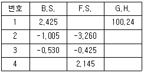
- 1⑤.925m
- 1⑤.435m
- 1⑤.345m
- 100.240m
(정답률: 50%)
5과목: 측량학
81. 국토지리정보원장은 대통령령이 정하는 바에 의하여 기본측량의 측량성과를 고시해야 하는데 측량성과의 고시 내용에 포함될 사항이 아닌 것은?
- 측량실시의 시기 및 지역
- 측량성과의 보관장소
- 임시로 설치하는 측량표지의 수
- 측량의 정확도
(정답률: 70%)
82. 다음 측량업 등록 신청서에 필요한 첨부자료 중 필요하지 않은 것은?
- 신청인의 신원증명서
- 법인인 경우 등기부등본
- 기술능력을 갖춘 사실을 증명하는 서류
- 장비를 갖춘 사실을 증명하는 서류
(정답률: 70%)
83. 측량 심의회의 심의사항이 아닌 것은?
- 측량기술의 연구발전에 관한 사항
- 국토지리정보원장이 부의하는 사항
- 측량도서의 발간
- 공공측량의 계획 수립에 관한 사항
(정답률: 25%)
84. 측량기기 성능검사의 항목에서 금속관로 탐지기의 구조·기능 검사 항목이 아닌 것은?
- 액정표시부 이상유무
- 송수신장치 이상유무
- 탐지기, 케이블 이상유무
- 광학구심장치 이상유무
(정답률: 80%)
85. 기본측량을 위하여 설치된 측량표의 이전에 관한 사항 중 옳은 것은?
- 측량표의 이전은 전혀 불가능하다.
- 상당한 이유가 있는 경우에 이전이 가능하며 비용은 신청자가 부담한다.
- 상당한 이유가 있는 경우에 이전이 가능하며 비용은 국가가 부담한다.
- 임의로 이전하고 그결과를 건설교통부장관에게 통보하면 된다.
(정답률: 62%)
86. 1/25,000지형도 도식규정에서 지류의 표시원칙으로 잘못된것은?
- 지류계와 지류기호로 표시한다.
- 기호는 도곽하변에 대하여 직립하도록 표시한다.
- 잡초지를 포함한 거치른 땅으로서 경지로 사용되지 않는 토지는 풀밭 지류기호로서 표시한다.
- 일반적으로 도상에서 5㎜2인 것에 대하여 표시한다.
(정답률: 64%)
87. 세계측지계라 함은 지구를 편평한 회전타원체로 상정하여 실시하는 위치측정의 기준이다. 다음중 회전타원체의 요건에 대한 설명으로 잘못된 것은?
- 회전타원체의 장반경은 6,378,137미터 이다.
- 회전타원체의 중심이 지구의 질량중심과 일치할 것
- 회전타원체의 편평율은 298.257222101분의 1 이다.
- 회전타원체의 장축이 지구의 자전축과 일치할 것
(정답률: 70%)
88. 지명의 고시 사항 중 옳지 않은 것은?
- 제정 또는 변경된 지명
- 소재지(행정구역으로 표시)
- 위치(경도 및 위도로 표시)
- 관련지역 표기지도
(정답률: 29%)
89. 다음 중 기본측량을 위하여 설치된 측량표를 감시할 의무가 있는 자는?
- 도지사
- 대전광역시장
- 측지기사
- 용인시장
(정답률: 69%)
90. 1/50,000 지형도상의 직각좌표는 몇 km 단위로 분할하여 표시 하는가?
- 1 km
- 2 km
- 3 km
- 4 km
(정답률: 73%)
91. 다음 중 성능검사 대행자의 등록을 취소할 수 없는 것은?
- 부정한 방법으로 등록을 한 때
- 등록 기준에 미달하게 된 때
- 업무정지기간 중에 계속하여 영업을 한 때
- 정당한 사유없이 성능검사를 거부 또는 기피한 때
(정답률: 73%)
92. 측량법상 측량기록이란?
- 측량실시를 위한 자료조사기록
- 측량에서 얻은 최종결과 기록
- 측량계획에 관한 기록
- 측량성과를 얻을 때 까지의 측량에 관한 작업기록
(정답률: 80%)
93. 측량업자인 법인이 파산 또는 합병이외의 사유로 해산한 때에 신고의무자는?
- 청산인
- 측량업자이었던 개인
- 법인의 대표자
- 파산관재인
(정답률: 80%)
94. 측량법에 의한 과태료 처분에 불복이 있는 자는 그 처분이 있음을 안 날로 부터 최대 며칠이내에 이의를 제기할 수 있는가?
- 7일 이내
- 15일 이내
- 20일 이내
- 30일 이내
(정답률: 알수없음)
95. 측량법의 규정에 따라 공공측량 및 일반측량에서 제외되는 측량을 설명한 것으로 틀린 것은?
- 지적법에 의한 지적측량
- 수로업무법에 의한 수로측량
- 국지적 측량으로서 건설교통부장관이 정하여 고시하는 측량
- 도시계획 측량
(정답률: 50%)
96. 공공측량에 준하는 측량에 해당되지 않는 것은？
- 측량면적이 1㎞2이상인 삼각측량
- 국토지리정보원장이 발간하는 지도의 축척과 동일한 축척의 지도제작
- 인공위성 등에서 취득한 영상정보에 좌표를 부여하기 위한 2차원 또는 3차원의 좌표측량
- 측량노선의 길이가 1㎞이상인 수준측량
(정답률: 알수없음)
97. 공공측량에 관한 작업규정의 작성권자는?
- 공공측량 작업기관
- 공공측량 계획기관
- 측량업자
- 국토지리정보원장
(정답률: 65%)
98. 측량의 기준이 되는 대한민국경위도원점 및 수준원점의 지점과 그 수치는 무엇으로 정하는가?
- 대통령령
- 국무총리령
- 건설교통부령
- 국토지리정보원 내규
(정답률: 91%)
99. 다음 측량표 중 영구표지에 속하지 않는 것은?
- 측량표지막대
- 자기점표석
- 수준점표석
- 검조의
(정답률: 70%)
100. 기본측량에 관한 연간계획을 하는 자는?
- 건설교통부장관
- 국토지리정보원장
- 시.도지사
- 대한측량협회장
(정답률: 60%)